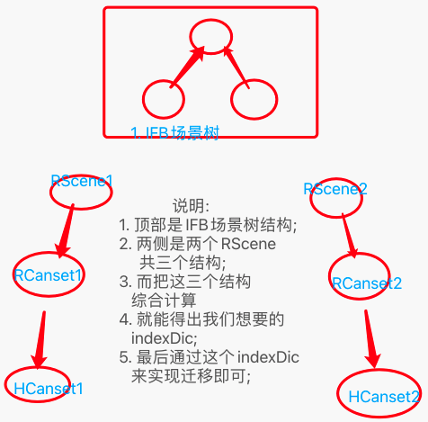
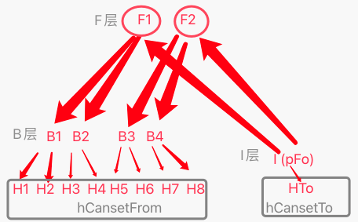
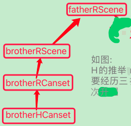

AI系列之《2024.03-05：hCanset、IndexDic 与反馈修正》

来源：HELIX_THEORY/手稿/assets/713_HCanset迁移之indexDic计算示图.png

来源：HELIX_THEORY/手稿/assets/714_H迁移示图.png

来源：HELIX_THEORY/手稿/assets/716_H迁移之推举示图.png
来源：Note31.md
3 到 5 月继续围绕 hSolutionV3 展开，重点包括 hCanset 过滤排序实时竞争机制、训练搬运 hCanset、Canset 的 IndexDic 算法、feedbackTOR 反馈修正，以及 Canset 传染机制。
IndexDic 的价值，在于让 Canset 的索引、匹配和复用更可控。反馈全不成立、RCanset 宽入 100% 等问题，暴露出“宽入”如果没有足够窄出的约束，会让系统误把太多候选当成可行。
Canset 传染机制则很有启发：一个方案的成功或失败，不只影响自己，也可能影响相近方案的权重与可用性。系统开始具备更像经验网络的联动更新能力。